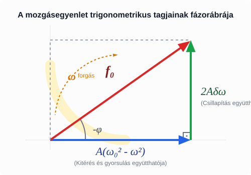

Ebben a szimulációban a kísérletben látottakat tudjuk megismételni. A testre hat egy periodikus gerjesztőerő, amit egy piros nyíl szimbolizál a szimulációban. Ez éppen úgy energiát ad a rendszernek, mint a kísérletben a rugó végének periodikus mozgatása. Az utóbbi a rendszer egyensúlyi helyzetét mozgatja periodikusan, amely egy periodikus gerjesztőerőt jelent, amely a testet éri. Amennyiben a sajátfrekvencia megegyezik a gerjesztőerő frekvenciájával, a rendszer energiája nőni kezd, mivel az erő megfelelő ütemben hat és a munkája sosem negatív, tehát növeli a rendszer mechanikai energiáját. Egészen addig tart ez, ameddig egy periódus alatt a csillapítás pontosan annyi energiát emészt fel, amennyit a rendszer a gerjesztéstől kap. Ilyenkor időben állandó amplitúdójú rezgés alakul ki, és ez az amplitúdó akkor lesz a legnagyobb, amikor a sajátfrekvencia megegyezik a gerjesztőerő frekvenciájával. Ez egészen pontosan csak a csillapításmentes határesetben igaz. Amennyiben a csillapítás kicsiny, de nem elhanyagolható, a maximális amplitúdó egy kicsivel a rendszer sajátfrekvenciája alatt lép fel, ahogyan azt látni fogjuk. Egy csúszkán állítható a gerjesztőfrekvencia, középen a rendszer sajátfrekvenciája van.
Kényszerrezgés, rezonancia szimuláció
Szabad rezgés: A rezgő test nem kap energiát a környezetéből, de folyamatosan veszít a csillapítás által. A szabad rezgés a csillapítás miatt idővel elhal.
Sajátfrekvencia: A csillapítatlan szabad rezgés frekvenciája. Ha a csillapítási tényező kicsiny a sajátfrekvenciához képest, akkor a csillapított szabad rezgés frekvenciája is megegyezik a sajátfrekvenciával.
Gerjesztőerő: A rezgő testet vagy rendszert érő periodikus erő, amely energiát adhat át a testnek.
Kényszerrezgés: A rendszerre ható periodikus gerjesztőerő hatására kialakuló időben állandó mechanikai energiájú állapot. Ennek kialakulása időt vesz igénybe, a szabad rezgés elhal, a frekvencia megegyezik a gerjesztőerő frekvenciájával. Az amplitúdó időben állandó.
Rezonancia: A kényszerrezgés amplitúdója igen naggyá válhat, amikor a sajátfrekvencia és a gerjesztőerő frekvenciája megegyezik. Ez a rezonancia. Az energiafelvétel a rezgő rendszer által maximális rezonancián. Az amplitúdó értéke kissé alacsonyabb frekvencián lesz maximális, amikor a csillapítási veszteségek kisebbek.
Az erőkhöz a rugalmas erőn és a csillapításon kívül hozzájön a periodikus gerjesztőerő, amennyiben a kényszerrezgést akarjuk vizsgálni.
Az eredőerőt Newton második törvénye alapján egyenlővé tehetjük a tömeg és a gyorsulás szorzatával.
Így felírhatjuk a mozgásegyenletet, amit át is rendezünk.
A tömeggel oszthatjuk az egyenletet, és így kapjuk a következő alakot.
Itt a következő jelöléseket vezettük be.
Most meg fogjuk keresni a gerjesztett rezgés amplitúdójának és kezdőfázisának frekvenciafüggését leíró képleteket! Annyit tudunk, a gerjesztett rezgés frekvenciája megegyezik a gerjesztőerő frekvenciájával és az amplitúdó időben állandó.
Ismerjük a sebességet és a gyorsulást leíró formulákat is!
Ezeket be fogjuk helyettesíteni a mozgásegyenletbe, majd felhasználunk két trigonometriából ismert azonosságot.
Ezeket most felhasználjuk a behelyettesítéshez, hogy a fenti kifejezéseket felírhassuk -t és -t tartalmazó tagok összegeként.
Nézzük meg először a együtthatóit, melyek 0-t kell adjanak, hisz az egyenlet jobb oldalán nem szerepel ilyen tag.
Most azt fogjuk vizsgálni, hogyan függ az amplitúdó a gerjesztőfrekvenciától. Ehhez a -t tartalmazó tagokat gyűjtjük össze a mozgásegyenlet bal oldalán és -t kell kapnunk, hisz a jobb oldalon szerepel.
A együtthatóiból képzett egyenlet felírható a következő alakban is.
A trükk az, hogy mindkét egyenletet négyzetre emeljük és összeadjuk, ezáltal kiesik a fázistolás.
Az összevonásokat elvégezve, felhasználva a Pitagorasz-tétel trigonometrikus alakját, a következő egyenletet kapjuk.
Innen kifejezhető.
Emlékezzünk vissza, hogyan vezettük be a harmonikus rezgőmozgást a tanulmányaink elején! A rezgést egy egyenletes körmozgást végző test (az ún. referenciakörön mozgó pont) árnyékaként, vetületeként képzeltük el. Ennek a körmozgásnak a szögsebessége éppen az körfrekvencia.
Pontosan ezt a logikát alkalmazzuk itt is! A kényszerrezgés során a kitérés, a sebesség és a gyorsulás is periodikusan változik. Ezeket a mennyiségeket elképzelhetjük egy-egy szögsebességgel forgó vektorként, amelyeknek a vízszintes tengelyre vett vetülete adja meg a pillanatnyi értékeket: * A kitérés egy bizonyos szögben áll. * A sebesség a kitéréshez képest pontosan -kal siet (hiszen a koszinuszból szinusz lett). * A gyorsulás pedig -kal van elfordulva a kitéréshez képest (mivel a koszinuszból mínusz koszinusz lett).
Mivel az egyenletben szereplő összes tag (a visszatérítő hatás, a csillapítás, a gyorsulás és a gerjesztőerő) ugyanazzal az körfrekvenciával forog, egymáshoz viszonyított szögük sosem változik. Ha “gondolatban együtt forgunk” velük, akkor ezek a vektorok megállnak, és egy egyszerű, álló derékszögű háromszöget alkotnak!
Így a bonyolult trigonometriai azonosságok helyett egy egyszerű Pitagorasz-tétellel is megkaphatjuk az amplitúdók közötti összefüggést!

A görbe esetén a végtelenbe nyúlik, mivel az amplitúdó növekedését semmi nem korlátozza. Ez a gyakorlatban rezonanciakatasztrófához vezet.
A következő GeoGebra projektből szépen látszik, hogy a maximum az -nél van. Ez esetén lenne így, a mi esetünkben azonban , és valóban a rezonancián a kialakuló amplitúdó kb. 2 m.
Amplitúdó-körfrekvencia grafikon
Most azt fogjuk megmutatni, hogy az amplitúdó maximális a következő körfrekvenciánál.
Az amplitúdó ott maximális, ahol a gyök alatti kifejezés minimális. Vizsgáljuk ezt a kifejezést!
Itt egy másodfokú kifejezésről van szó az -re nézve. Ennek a minimumát könnyen megtalálhatjuk teljes négyzetté alakítással! Először is vegyük észre, hogy a második tagban a zárójelben épp áll!
Ennek a minimuma akkor van, amikor az első négyzetes tag épp 0, hisz a másik két tag állandó!
Ezzel beláttuk, hogy az amplitúdó maximális az körfrekvenciánál.
Számítsuk ki a szimulációs példánk esetében az amplitúdómaximumnak megfelelő körfrekvenciát és a pontos amplitúdómaximumot is!
Ezekből az adatokból az amplitúdómaximum helye:
A kis csillapítás miatt ez csak egy igen kis mértékben kevesebb, mint . Az amplitúdómaximum:
Egy tömegű testet egy direkciós erejű rugóra függesztünk. A rendszert egy periodikus erő gerjeszti. A csillapítási tényező . Határozza meg a rendszer csillapítatlan saját körfrekvenciáját (), valamint azt a gerjesztő körfrekvenciát (), amelynél a kényszerrezgés amplitúdója maximális lesz!
Egy lengéscsillapítóval felszerelt jármű tömege , a rugózat eredő direkciós ereje . A jármű egy olyan úton halad, ahol a keresztirányú úthibák (bukkanók) egymástól egyenlő távolságra követik egymást. Milyen sebességgel () kell haladnia az autónak ahhoz, hogy fellépjen a rezonancia jelensége, ha a lengéscsillapítás mértékét elhanyagolhatónak tekintjük?
Az elméleti összefoglalóban levezetett kifejezés alapján mutassa meg, hogy mekkora a gerjesztőerő és a kitérés közötti fáziskülönbség abban a speciális esetben, amikor a gerjesztő frekvencia pontosan megegyezik a sajátfrekvenciával ()! Fogalmazza meg szavakkal is, mit jelent ez a fáziskülönbség a sebesség és a gerjesztőerő irányára nézve!